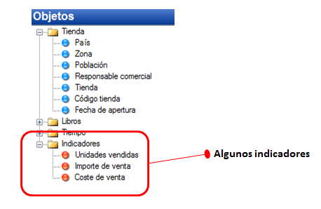
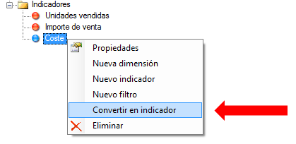
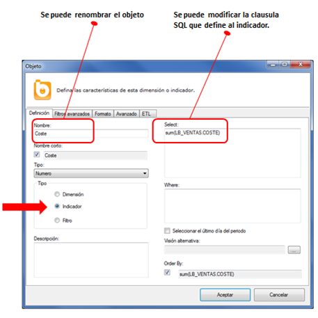
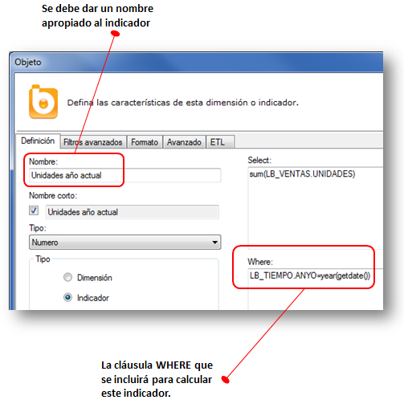
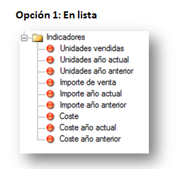
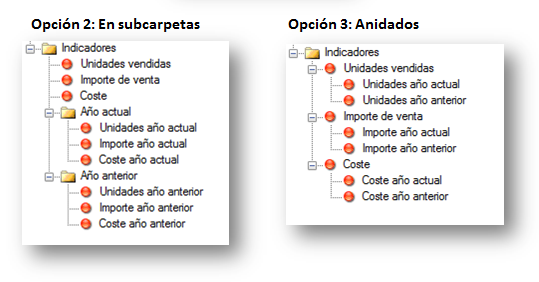
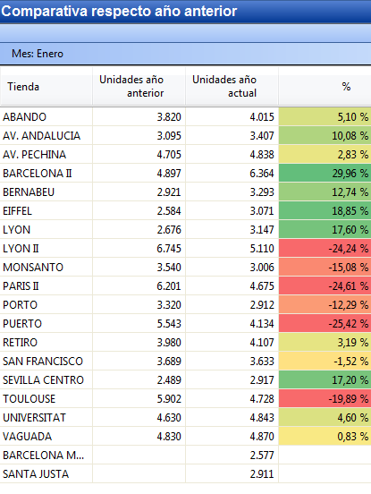

Indicadores
Los indicadores son las medidas cuantitativas que se incluyen en los informes corporativos e informan sobre la evolución o el estado de alguna área del negocio. Indicadores habituales son “Ventas”, “Compras”, “Número de empleados”, etc. Se trata de información numérica, y se suele incluir en las cláusulas SELECT con alguna función de agregación ( sum , avg , min , max ,...).
En los catálogos de Bingo Intelligence los indicadores se representan con un icono con forma de “bola roja”. En el artículo sobre cómo construir un catálogo se definen unos pocos indicadores básicos:

Indicadores básicos
En la mayoría de los casos los indicadores se calculan sumando los valores de un campo. Por ejemplo, el indicador “Unidades vendidas” se calcula sumando las unidades vendidas en cada transacción de venta. Del mismo modo, se calculan muchos otros indicadores habituales (costes, compras, unidades defectuosas, presupuestos,...).
En estos casos, se puede crear un indicador arrastrándolo desde la tabla al panel de navegación de objetos, y seleccionando la opción “Convertir en indicador” del menú contextual (botón derecho).

Una vez creado siempre se puede modificar su definición desde el formulario de “Propiedades” del objeto. Por ejemplo, se podría cambiar la función de agregación SUM por cualquier otra que soporte la base de datos.

También se puede renombrar el indicador directamente desde el panel de navegación de objetos. Para ello, se debe seleccionar el indicador y pulsar F2, o mediante un “doble clic lento” del ratón.
Indicadores con operaciones aritméticas
En el campo SELECT de la ventana de propiedades se puede incluir cualquier expresión SQL soportada por el gestor de la base de datos, incluyendo todas las operaciones aritméticas, y las funciones propias del dialecto SQL de la base de datos que se esté utilizando. En el momento de generar la consulta, el generador de consultas de Bingo Intelligence incluirá esa expresión en la cláusula SELECT de la sentencia SQL, y será el motor de la base de datos quien realice el cálculo.
Se puede hacer referencia a varios campos, incluso si están en tablas diferentes, y se pueden hacer operaciones entre ellos. En el caso de que se incluyan referencias a diferentes tablas, el generador de consultas de Bingo Intelligence lo tendrá en cuenta para añadir las tablas y relaciones que sean necesarias.
Por ejemplo, algunos indicadores habituales se pueden definir mediante expresiones SQL similares a las siguientes:

Algunas consideraciones importantes son:
- Es necesario utilizar la nomenclatura [TABLA].[CAMPO] para referirse a cualquier campo. No hay que poner el nombre de la base de datos ni el esquema. Es obligatorio mencionar el nombre de la tabla.
- Todas las tablas referenciadas deben estar importadas en el catálogo y deben figurar en el diagrama.
- Todas las tablas mencionadas en la definición de un indicador han de pertenecer a la misma “estrella”. Es decir, ha de ser posible unir todas las tablas mencionadas a través de las relaciones del catálogo.
Indicadores con filtros
En muchos informes se compara un mismo indicador entre dos fechas determinadas. Por ejemplo, es muy habitual comparar las ventas de este año respecto las del año anterior.
Es posible incluir un filtro en la definición de un indicador. Gracias a esta funcionalidad es posible definir los indicadores “Ventas año actual”, “Ventas año anterior”, “Ventas nacionales”, etc.
De esta manera, por ejemplo, los usuarios podrán incluir los indicadores “Ventas año actual” y “Ventas año anterior” en una consulta y compararlos entre sí. Para ello, si es necesario, el generador de consultas de Bingo Intelligence generará varias sentencias SQL independientes, y sincronizará los resultados.
Para hacer este tipo de informes no es estrictamente necesario definir estos indicadores en el catálogo. Los usuarios podrían utilizar el indicador genérico “Ventas”, y aplicar manualmente los filtros. Sin embargo, al ser una necesidad tan habitual, se recomienda definir este tipo de indicadores en el catálogo, y simplificar así el trabajo de elaboración de los informes de una manera significativa.
Para incluir un filtro en la definición del indicador se tiene que completar el campo WHERE del formulario de propiedades.
Vamos a crear el indicador “Unidades año actual” utilizando el ejemplo de LA BIBLIO. Para ello, arrastramos el campo LB_VENTAS.UNIDADES al panel de navegación de objetos, lo convertimos en indicador, abrimos su formulario de propiedades, y lo completamos de la siguiente manera:

En este caso, en la cláusula WHERE se han incluido dos funciones de SQL Server (year y getdate). Para obtener el mejor rendimiento, se recomienda tener precalculado este tipo de filtros. De esta manera, el WHERE quedaría más sencillo: LB_TIEMPO.ES_ANYO_ACTUAL=1.
Una vez creado el indicador “Unidades año actual”, se pueden repetir los pasos para crear “Unidades año anterior”. Del mismo modo, se podrían crear indicadores análogos para los importes y los costes.
Finalmente, se deben ordenar los indicadores de la manera que resulte más conveniente para los usuarios.
Cuando existen pocos indicadores, se pueden mostrar mediante un sencillo listado:

Sin embargo, cuando el número de indicadores es elevado se recomienda organizarlos mediante carpetas y subcarpetas o de modo anidado:

Una vez creados y ordenados todos los indicadores conviene verificar que el funcionamiento es el esperado. Para ello, podemos utilizar el “Probador de consultar”, o crear un sencillo informe utilizando este catálogo:

Siguientes pasos
En el artículo sobre cómo crear indicadores avanzados se explica cómo se pueden crear indicadores acumulados (YTD, MTD, etc.) y móviles (medias móviles, TAM, etc.).